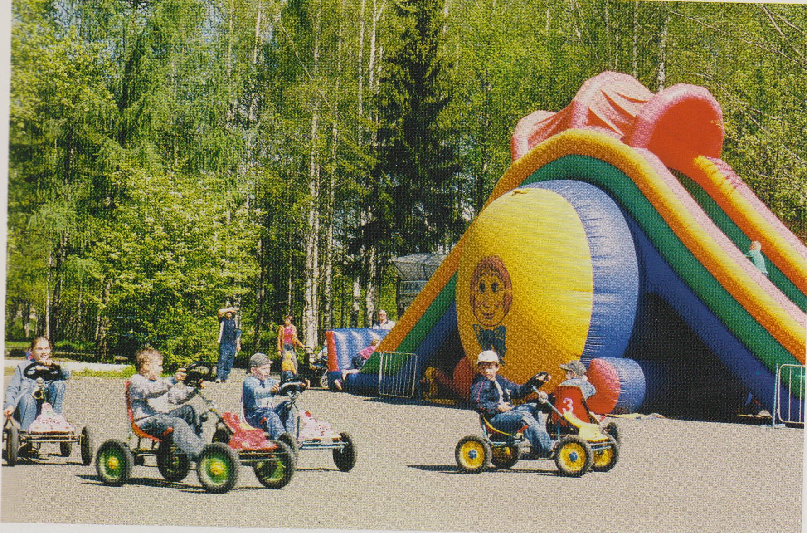

Парк культуры и отдыха
Парк культуры и отдыха г. Лесного начинал развиваться как лесопарковая зона для отдыха жителей города Свердловск-45 с конца 40-х годов на берегах городского пруда. В 1985 г. лесопарковая зона была переименована в городской парк культуры и отдыха, в 2003 г. – был оформлен статус Муниципального учреждения «Парк культуры и отдыха», в 2011 г. – статус Муниципального бюджетного учреждения. МБУ «Парк культуры и отдыха» входит в структуру и подчинение МКУ «Отдел культуры администрации ГО «Город Лесной».
В 1950-х – 1960-х годов в структуру парка входили: пляжная зона, лодочная станция, пункт проката пляжного инвентаря, спасательный пост, летняя танцевальная площадка, эстрада, кинотеатр, читальный павильон, городок детских аттракционов, художественная мастерская, кафе. В 1970 году построено и введено в эксплуатацию здание пункта проката спортивно-туристического инвентаря с бильярдным залом. В 1980-х годах увеличено количество аттракционов, построен детский городок малых форм, бильярдный зал реконструирован в зал игровых автоматов, оформлена аллея «Ветеранов и Славы», пляжная зона передана на содержание Комбинату благоустройства. В период с 1985 по 1992 гг. в структуру Парка культуры и отдыха входил Межшкольный зал ритмики и танца «Юность» (в настоящее время – МБУ «Дом творчества и досуга «Юность»). В 1990 году введен в эксплуатацию Павильон аттракционов с Автодромом, игровыми автоматами, батутами. Приобретены игровые имитаторы, новые аттракционы, веломобили, ростовые куклы для проведения игровых развлекательных программ; создан Зимний сад экзотических растений, который, несомненно, является украшением Павильона развлечений.
На настоящий момент в Парке культуры и отдыха работают 6 уличных аттракционов и мини-автопоезд , в Павильоне развлечений — мягкая игровая комната, 2 аттракциона для малышей, 3 батута, 7 игровых автоматов, 10 аттракционов малых форм; всегда к услугам – Пункт проката туристического инвентаря и Бильярдный зал.
Парк культуры и отдыха, являясь культурно-досуговым учреждением, регулярно проводит для родителей с детьми игровые развлекательные программы, конкурсы и выставки творческих работ; праздничные программы и массовые гуляния для жителей города: Открытие летнего паркового сезона, День Победы, День защиты детей, День города, День молодежи, Праздник национальных культур «Сабантуй», Городской праздник «День семьи, любви и верности», День Знаний, квест-игры для городских летних лагерей. В 2013 году Парк культуры и отдыха с большим успехом принял участие во Всероссийской благотворительной акции «Улыбнемся солнечному дню!»
Директорами парка за все годы работали:
Е. Н. Эйсмонт,
Т. С. Маслова,